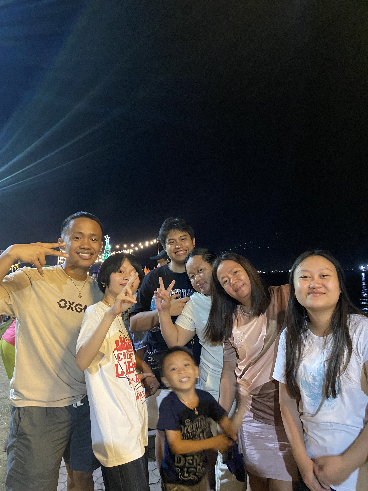
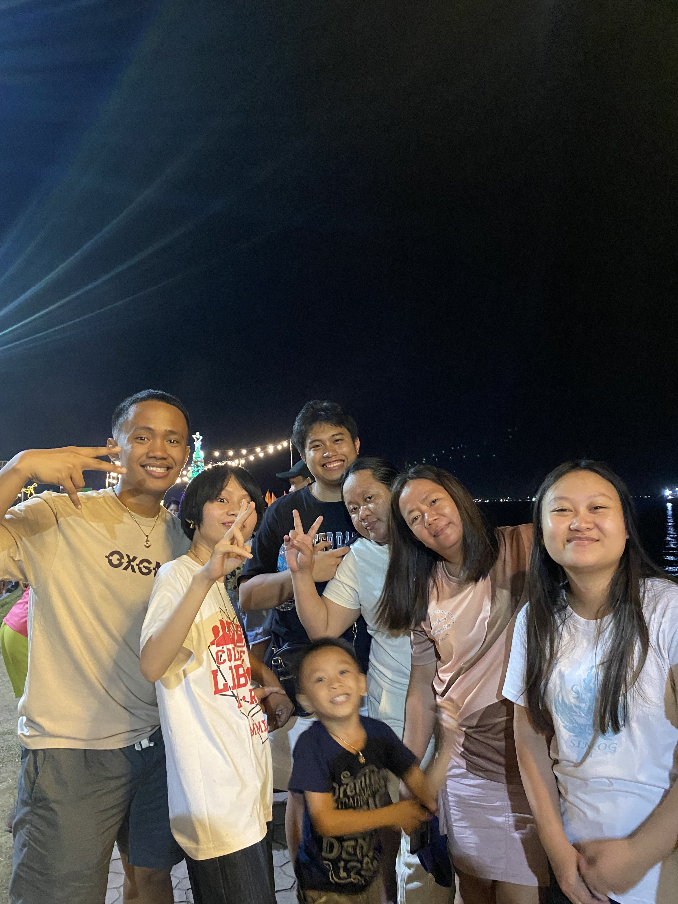

WELCOME
It’s a tale as old as time: the struggle to choose a path in a world of endless possibilities. My journey has been a chaotic, sometimes comical, exploration of fleeting interests and grand ambitions. From dreaming of becoming a crime-fighting hero to briefly embracing the life of a master hacker, I've dabbled in it all—each new hobby a brief, passionate obsession that burned brightly before I moved on to the next. This is the story of lessons learned, found, and the unyielding spirit of discovery.


 
